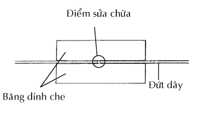
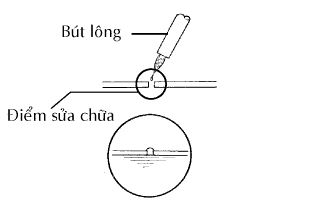

DÂY SẤY KÍNH > SỬA CHỮA |
| 1. SỬA CHỮA DÂY SƯỞI KÍNH HẬU |
|  |
Lau sạch các đầu dây bị đứt bằng dụng cụ làm sạch mỡ.
Hãy dán băng dính che dọc theo các hai bên dây.
Trộn thật đều chất sửa chữa.
|  |
Dùng bút lông, bội một lượng nhỏ chất lên dây điện.
Sau vài phút, hãy bóc băng dính che.